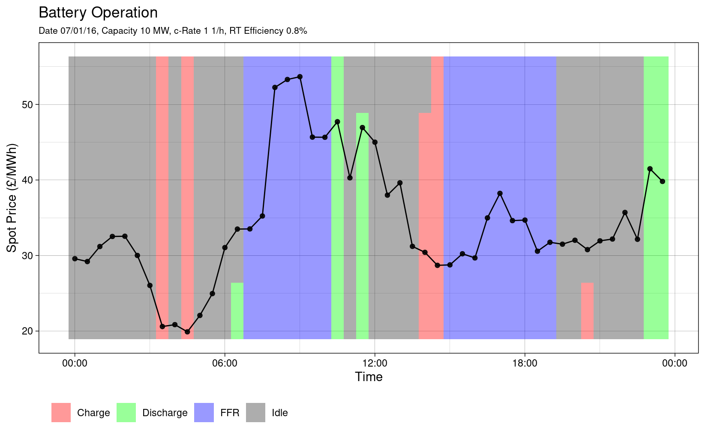
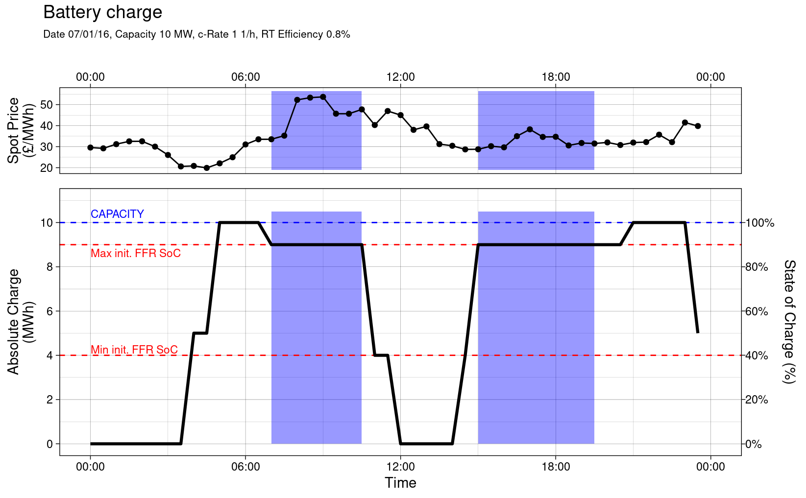

vignettes/optimising-arbitrage-with-ffr-market.Rmd
optimising-arbitrage-with-ffr-market.RmdIt can be desirable to participate in a balancing service market whilst also using arbitrage to supplement income. Participation in a balancing service market requires the participant to be available to charge/discharge exclusively within that market during contracted periods. Hence, arbitrage will be unavailable at these times. Furthermore, there will be a requirement to be available to charge/discharge a specified minimum amount of energy during the contracted periods and this will require the battery capacity to be within a specified state of charge range at the commencement of the period. Providing these constraints are adhered to, arbitrage can be operated during periods outside of the balancing service contract periods. In this document, a demonstration of how this scenario can be modelled with the rbattery package is presented.
Assume that the battery specification is as follows:
Degradation will not be considered in this example.
# Setup battery parameters. capacity <- 10 c_rate <- 1 rt_efficiency <- .8
The rbattery package ships with example spot price data i.e. spot_price_2016. For simplicity, in this demonstration, EPEX spot price data for 01/07/2016 will be used:
analysis_day <- lubridate::ymd("2016-07-01") # Filter data. df_spot_price_20160701 <- rbattery::spot_price_2016 %>% dplyr::select(timestamp, price_epex = EPEX) %>% dplyr::filter(as.Date(timestamp) == analysis_day) df_spot_price_20160701 %>% head() #> # A tibble: 6 x 2 #> timestamp price_epex #> <dttm> <dbl> #> 1 2016-07-01 00:00:00 29.6 #> 2 2016-07-01 00:30:00 29.2 #> 3 2016-07-01 01:00:00 31.2 #> 4 2016-07-01 01:30:00 32.5 #> 5 2016-07-01 02:00:00 32.6 #> 6 2016-07-01 02:30:00 30.0
It will be assumed that the contract to supply FFR services stipulates the following:
# Setup contract requirement data. init_max_sos <- .9 init_min_sos <- .4 df_contract_req <- tribble( ~start, ~end, #----------# #----------# "07:00", "10:00", "15:00", "19:00" ) df_contract_req <- df_contract_req %>% dplyr::mutate_all(~lubridate::ymd_hm(glue::glue("{analysis_day} {.}"))) %>% dplyr::mutate(max_charge = capacity * 0.9, min_charge = capacity * 0.4) df_contract_req #> # A tibble: 2 x 4 #> start end max_charge min_charge #> <dttm> <dttm> <dbl> <dbl> #> 1 2016-07-01 07:00:00 2016-07-01 10:00:00 9 4 #> 2 2016-07-01 15:00:00 2016-07-01 19:00:00 9 4
The rbattery::optimise_arbitrage() is the “workhorse” of the package. The first argument must be a data.frame with the following data for each settlement period i.e. each row:
In order to run the optimisation, it is necessary to bind the spot price data to the data listed above.
The exclude flag should be 1 during the FFR service contract windows and 0 otherwise. These are calculated and appended as follows:
# Initialise input dataframe with spot price data. df_optim_20160701 <- df_spot_price_20160701 is_excluded <- function(start, end, x) dplyr::between(x, start, end) # Set exclude flags. exclude <- df_contract_req %>% select(start, end) %>% # Iterate each contract window. pmap(is_excluded, x = df_optim_20160701[['timestamp']]) %>% # Reduce using an OR operation. reduce(`|`) %>% as.integer() df_optim_20160701 <- df_optim_20160701 %>% dplyr::bind_cols(exclude = exclude)
The maximum/minimum charge can simply be joined to the data as follows. For timestamps that do not coincide with df_contract_req$start, the min_charge and max_charge will be set to NA i.e. no data. This turns out to be convenient since NA is interpreted as the default min or max charge by rbattery::optimise_arbitrage i.e. 0 and the battery capacity respectively. Hence, after the join, the data.frame is in form required for optimisation.
Note that the join works if the window start time is coincident with a settlement period, however, further manipulation would be required if this were not the case i.e. it would be required to ‘roll forward’ the min/max charge data to the next settlement period start time.
# Set max/min charge. df_optim_20160701 <- df_optim_20160701 %>% dplyr::full_join( df_contract_req %>% dplyr::select(-end), by = c('timestamp' = 'start')) # Show example. from_time <- lubridate::ymd_hm(glue::glue('{analysis_day} 06:00')) df_optim_20160701 %>% dplyr::filter(timestamp >= from_time) #> # A tibble: 36 x 5 #> timestamp price_epex exclude max_charge min_charge #> <dttm> <dbl> <int> <dbl> <dbl> #> 1 2016-07-01 06:00:00 31.0 0 NA NA #> 2 2016-07-01 06:30:00 33.5 0 NA NA #> 3 2016-07-01 07:00:00 33.5 1 9 4 #> 4 2016-07-01 07:30:00 35.2 1 NA NA #> 5 2016-07-01 08:00:00 52.2 1 NA NA #> 6 2016-07-01 08:30:00 53.3 1 NA NA #> 7 2016-07-01 09:00:00 53.7 1 NA NA #> 8 2016-07-01 09:30:00 45.7 1 NA NA #> 9 2016-07-01 10:00:00 45.6 1 NA NA #> 10 2016-07-01 10:30:00 47.7 0 NA NA #> # … with 26 more rows
Now, the data.frame is in the required form and the optimisation algorithm can be applied:
# Optimise. df_optim_20160701 <- df_optim_20160701 %>% rbattery::optimise_arbitrage(price_from = 'price_epex', exclude_from = 'exclude', max_charge_from = 'max_charge', min_charge_from = 'min_charge', capacity = capacity, c_rate = c_rate, efficiency = sqrt(rt_efficiency)) df_optim_20160701 %>% head() #> timestamp price_epex exclude max_charge min_charge charge_state #> 1 2016-07-01 00:00:00 29.58 0 NA NA 0 #> 2 2016-07-01 00:30:00 29.20 0 NA NA 0 #> 3 2016-07-01 01:00:00 31.19 0 NA NA 0 #> 4 2016-07-01 01:30:00 32.52 0 NA NA 0 #> 5 2016-07-01 02:00:00 32.55 0 NA NA 0 #> 6 2016-07-01 02:30:00 30.01 0 NA NA 0 #> discharge charge arb_income deg_cost #> 1 0 0 0 0 #> 2 0 0 0 0 #> 3 0 0 0 0 #> 4 0 0 0 0 #> 5 0 0 0 0 #> 6 0 0 0 0
R has powerful graph plotting packages for presenting results. Three plots are presented below to showcase the capability of the ggplot package.
This plot shows the battery operation with time. As expected, the battery charges when the spot price is low and discharges when the spot price is high. The height of the bar corresponds to the fraction of the period for which the battery charges or discharges.

The next plot shows how the state of charge with time. The FFR windows are shaded in blue. The battery is idle during the FFR contract window, since arbitrage is not permitted; its charge is within the permissive range at the start of each window. In reality, the battery may not be idle during the FFR window since it may be utilised under the FFR contract. However, in this example, it is assumed that there is no utilisation.
